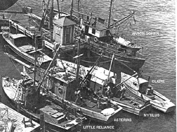

|  copyright - WHOI |
Claire was a small launch first chartered by WHOI from Captain
E. Rogers of Martha's Vineyard. The vessel was later purchased for servicing
the Nonamesset Island Explosives Project and for use in measuring shock
waves. In April 1957, the Woods Hole Oceanographic Institution gave Claire
to Sea Explorers of Wollaston, Massachusetts.